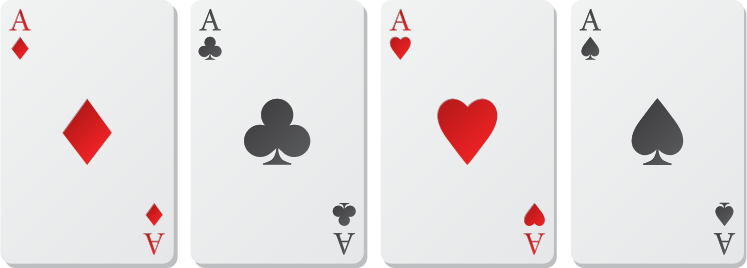

Pyramid of Love Game: A Journey Through Its History
The Pyramid of Love game has captured the hearts of players around
the world with its unique blend of intrigue
 and emotional connection. Its origins can be traced back to the
early 2000s when innovative game designers began to explore
interbusy storytelling and relationship-building mechanics. Drawing
inspiration from traditional board games and role-playing
experiences, the creators envisioned a game that not only provided
entertainment but also encouraged players to delve into their
emotional connections, emphasizing communication, empathy, and
teamwork.
and emotional connection. Its origins can be traced back to the
early 2000s when innovative game designers began to explore
interbusy storytelling and relationship-building mechanics. Drawing
inspiration from traditional board games and role-playing
experiences, the creators envisioned a game that not only provided
entertainment but also encouraged players to delve into their
emotional connections, emphasizing communication, empathy, and
teamwork.
As the years passed, the Pyramid of Love game gained significant
popularity, especially in the late 2010s.
The rise of social media and online gaming communities allowed
players to share their experiences and strategies, creating a
vibrant culture around the game. Its focus on love and relationships
resonated with a diverse audience, attracting couples, friends, and
families who sought a fun and meaningful way to connect with one
another. Various themed editions and expansions also emerged,
offering new experiences that tailored gameplay to different
interests and relationship dynamics.
In recent years, the game has embraced modern technology by
introducing mobile and online versions, making it more accessible to
a broader audience. This digital transformation allows players to
connect with each other even if they are miles apart. Incorporating
player feedback has led to the evolution of contemporary themes
within the game, ensuring that it remains relevant and engaging for
today's players. The Pyramid of Love continues to thrive, fostering
connections and deepening relationships, one game at a time.
A Guide to Connection and Fun

Playing the Pyramid of Love game offers an engaging way to
strengthen relationships and foster communication among players. To
start, gather your group—this game is ideal for couples, friends, or
family members. Each player takes turns drawing cards that present
scenarios, questions, or challenges related to love, trust, and
friendship. These prompts encourage players to share personal
stories, insights, or thoughts, creating a deeper understanding
among participants. The goal is not just to complete the game but to
build connections and strengthen bonds as you navigate through the
various levels of questions and challenges.
The game comprises tiers based on the depth of the topics. The lower
levels may include light-hearted questions, such as favorite
memories or shared experiences, while the upper levels delve into
more profound themes like uncertainties, fears, and dreams for the
future. Players can earn points or move up the pyramid by
successfully answering or engaging with these prompts.
It is essential to create a safe and open atmosphere where players
feel comfortable sharing their thoughts and feelings, making the
experience meaningful and rewarding for everyone involved.
Additionally, the Pyramid of Love allows for flexibility in
gameplay. You can adapt rules, add your own prompts, or create team
challenges to enhance the experience. The emphasis is on enjoying
the process rather than just winning or losing. Players are
encouraged to listen busyly and engage in discussions, making each
session a unique journey of discovery. Ultimately, the Pyramid of
Love game serves as a delightful opportunity to connect with one
another, reflect on relationships, and create lasting memories.
the scoring secrets of love
 The Pyramid of Love game is centered around building emotional
intimacy and trust through vulnerability. At the heart of the game
is a scoring system that rewards players for being open and honest.
But how does the game actually score, and what are the winning
conditions? Let's break it down.
The Pyramid of Love game is centered around building emotional
intimacy and trust through vulnerability. At the heart of the game
is a scoring system that rewards players for being open and honest.
But how does the game actually score, and what are the winning
conditions? Let's break it down.
The scoring in Pyramid of Love is relatively straightforward. Each
player starts with 100 points, and each round, they have the
opportunity to share a question or statement and receive points for
being vulnerable. Players can earn up to 5 points for sharing a deep
or meaningful response. However, they can lose points for being
evasive or not sharing as openly as their peers. The game is won by
the player who accumulates the most points over a set number of
rounds, typically 5-7. The player with the lowest score at the end
of the game is often considered the "winner," as they have
demonstrated the greatest willingness to be vulnerable and
emotionally honest.
 To win the game outright, a player typically needs to have the
highest score at the end of the final round. In some variations, the
player with the lowest score is declared the winner, often receiving
a prize or a title such as "Most Vulnerable." However, the true
reward of the game is the deepened connection and understanding that
players develop with one another. By being vulnerable and sharing
their thoughts and feelings, players create a stronger bond and a
more supportive community. Whether your goal is to win the game or
simply to connect with others, the Pyramid of Love is a powerful
tool for building emotional intimacy and trust.
To win the game outright, a player typically needs to have the
highest score at the end of the final round. In some variations, the
player with the lowest score is declared the winner, often receiving
a prize or a title such as "Most Vulnerable." However, the true
reward of the game is the deepened connection and understanding that
players develop with one another. By being vulnerable and sharing
their thoughts and feelings, players create a stronger bond and a
more supportive community. Whether your goal is to win the game or
simply to connect with others, the Pyramid of Love is a powerful
tool for building emotional intimacy and trust.